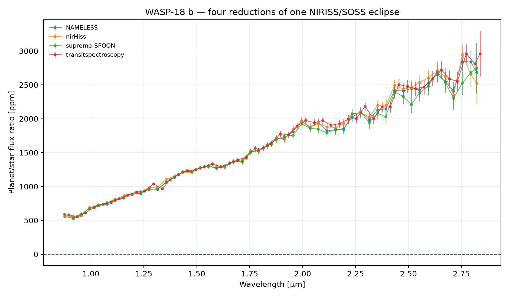
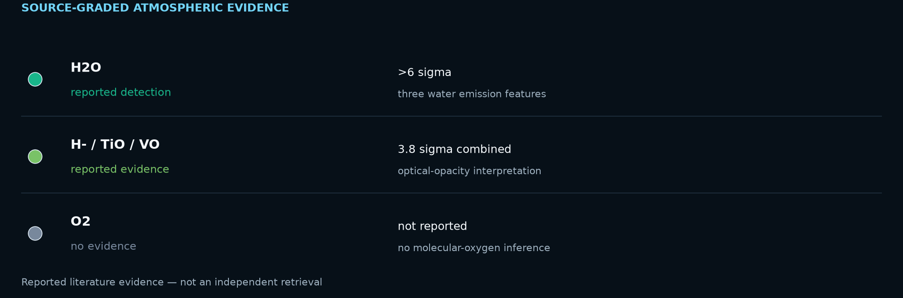

Data source notes
SHA-256, LF-normalised text
dca283b869036eed3270545f03d485f2c395f61b5e43e22925ac86f6d2080823Browse 15 versioned evidence files. Table previews simply display stored rows. Consult the project report for the source, processing steps, and inference assumptions.


dca283b869036eed3270545f03d485f2c395f61b5e43e22925ac86f6d20808238ee921d8e714b1267539cae0844c9b10b466dc02ed95d9f2ed56028dd27336538759cb499d0a2dea2df6ec79ea22fa7b544b81c4700595aebdf02ad2cff5c9ea779287b7d9f6423b3f4c145a8144890cc43317827e675393251f703488d46377ed353b9486a60791099d9a8bb2b8bd6ed21065afab6ea8418e14287394671428| species | status | evidence | basis | source_label | source_url |
|---|---|---|---|---|---|
| H2O | reported detection | >6 sigma | three water emission features | Coulombe et al. 2023, Nature | https://doi.org/10.1038/s41586-023-06230-1 |
| H- / TiO / VO | reported evidence | 3.8 sigma combined | optical-opacity interpretation | Coulombe et al. 2023, Nature | https://doi.org/10.1038/s41586-023-06230-1 |
| O2 | no evidence | not reported | no molecular-oxygen inference | Coulombe et al. 2023, Nature | https://doi.org/10.1038/s41586-023-06230-1 |
989e303ca7563b31998d138ab82bdfff21eb5e8aa884ca568d96884cc15ef575| pl_name | hostname | ra | dec | pl_orbper | pl_tranmid | pl_trandur |
|---|---|---|---|---|---|---|
| WASP-18 b | WASP-18 | 24.3544618 | -45.6777937 | 0.94145223 | 2456740.8056 | 2.21 |
24368e4aeffa15db970f8a509ec170d1e75bdac927d685687ae2ca53cc2c8d30| quantity | value | unit |
|---|---|---|
| sector | 2 | TESS sector |
| period_days | 0.94145223 | days; NASA Exoplanet Archive |
| published_duration_hours | 2.21 | hours; NASA Exoplanet Archive |
| a_over_rstar | 3.29965707354 | fixed from saved a and stellar radius |
0fb17d4212cac13f8ebfdd561c130aa02ab14d9422bc619ea62f94106d23bdc0| bins_below_1_micron | chi2 | comparison | dof | mean_ppm | median_error_ppm | n |
|---|---|---|---|---|---|---|
| 31 | 8657.475885065072 | NAMELESS vs weighted flat | 407 | 1050.3705652605079 | 122.42718807349206 | 408 |
| 31 | 8076.107646342917 | nirHiss vs weighted flat | 407 | 1087.3184152232238 | 140.64929025150536 | 408 |
| 31 | 6928.998182941429 | supreme-SPOON vs weighted flat | 407 | 1025.7724230930385 | 132.69643811482092 | 408 |
| 26 | 9219.589704667418 | transitspectroscopy vs weighted flat | 407 | 1079.3709165599346 | 120.02787640663337 | 408 |
571eb09cc0057a98537b66649a53586ee621d0376783d4dafb448803076172af| sector | filename | transit_events | n_points | transit_supported | delta_bic | timing_shift_hours |
|---|---|---|---|---|---|---|
| 2 | tess2018234235059-s0002-0000000100100827-0121-s_lc.fits | 28 | 10726 | True | 454334.4216 | 0.07512277188 |
5538252f9c9b86f0287c55c2b7af8ac8745f3a4f61d887d734932c73040e6b24| fraction_abs_independence_z_gt_2 | median_abs_independence_z | median_absolute_difference_ppm | median_difference_ppm | n_overlap | pair | rms_difference_ppm |
|---|---|---|---|---|---|---|
| 0.004901960784313725 | 0.23459405067661415 | 39.23803242733504 | -10.41525742213156 | 408 | NAMELESS - nirHiss | 184.23313542321543 |
| 0.0 | 0.23168498753751998 | 43.24303469719939 | -1.4523412091467662 | 408 | NAMELESS - supreme-SPOON | 164.22734061694075 |
| 0.02977667493796526 | 0.7096577264109241 | 106.72775956567602 | -17.201035925195356 | 403 | NAMELESS - transitspectroscopy | 306.481736915964 |
| 0.004901960784313725 | 0.3205032629351213 | 55.171068489040294 | 17.864744951831312 | 408 | nirHiss - supreme-SPOON | 244.5575336269161 |
9709307be0649e1a6863b11fe42525693b5c82fa77ed39931857f6d65041c01ad068e16c93329556911c18cacd33e4a1210206fd1420c10c1a95b25398b1687424eb160f7e83f584865fb9218c0fa67e70920cdfb1f40f7caf1d6c2e0b901c64424699f037ed49ecafa156c7ece255e73ef5eeec103ff8f6017a3cd86bb6b3cb97dc2eb7a25fc47decd407a5f4b219503d249dfc98f0a56f7cd7fb62a72162eeSHA-256 values verify the stored files. They do not independently validate the scientific analysis. Rebuild this page with python scripts/evidence_catalog.py followed by python scripts/render_evidence_page.py.